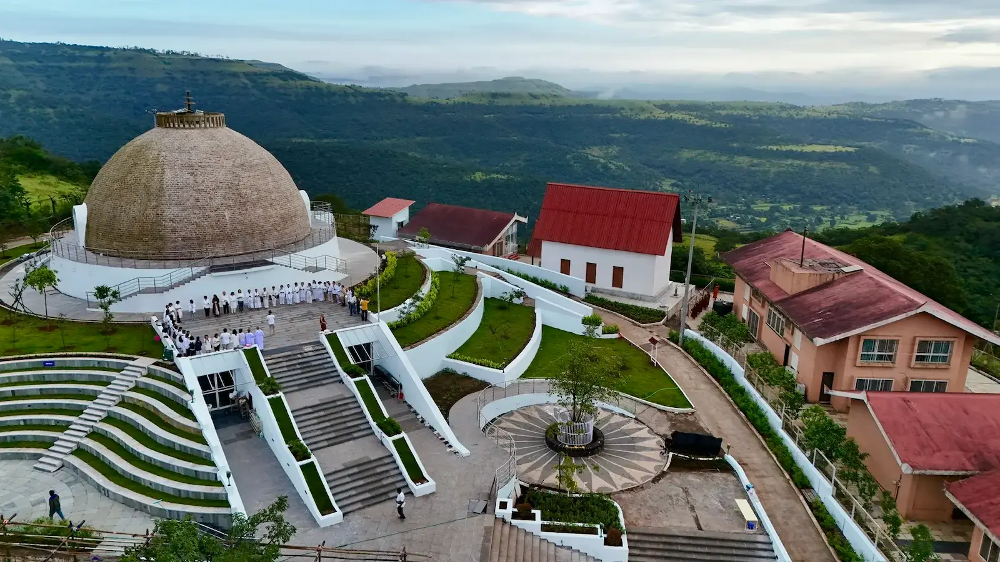
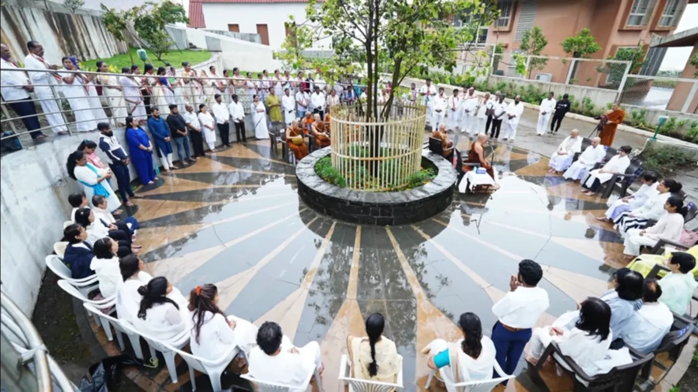
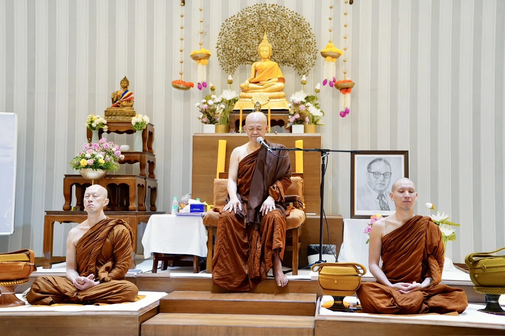
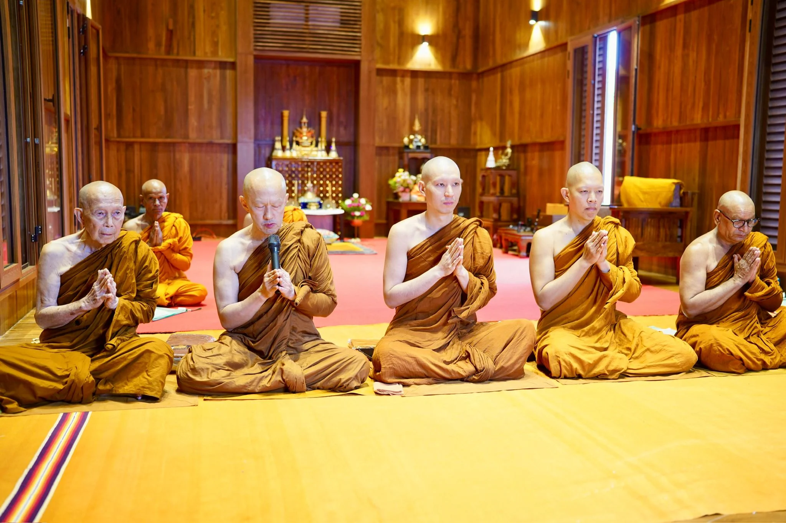
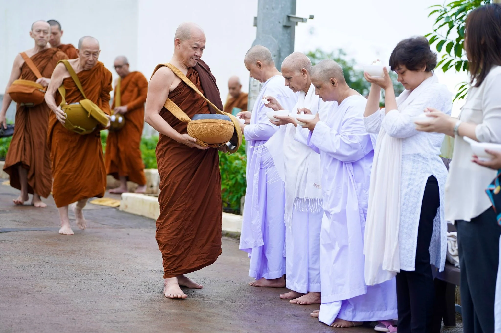

Welcome to Dhamma Vinaya Monastery Pune (DVMP), a quiet 10-acre sanctuary nestled in the serene landscapes of Agalambe near Khadakwasla. Rooted in the Thai Forest tradition, the monastery offers a space for stillness, reflection, and direct practice of the Buddha’s path.
The foundation of this path lies in Dhamma—the universal truth—and Vinaya—the discipline that supports its realization. When practiced together, they guide the mind toward clarity, freedom, and the complete ending of suffering.
The first phase was inaugurated on the 2587th Buddha Jayanti (May 2023) By Thai Buddhist Monk Most Venerable Arayawangso Guruji, a renowned spiritual teacher and Dhamma scholar.
A grand Sanchi-style Stupa housing sacred relics of the Buddha and the Arahants, gifted by the Thai Sangha.
A center envisioned by Most Venerable Arayawangso Guruji to serve the welfare of all beings.
Adjoined by the 100-acre Veluvan Meditation Park (under construction), supporting walking meditation and seclusion.
To provide a dedicated space for the study and practice of Buddhist monastic discipline and meditation. We believe that when Dhamma and Vinaya function together, they lead to total unbinding and release from suffering.
The monastery has been developed by the Bahujan Hitaya Samajik Bandhilki Sanstha (BHSBS), Pune, an organization established in 2015 with the intention of fostering the Indian society rooted in a dignified life for all, guided by the principles of justice, liberty, equality, and fraternity.
Alongside its broader work in areas such as skill development and women’s empowerment, BHSBS supports initiatives that nurture both understanding and practice of the Dhamma. In July 2025, a monks ordination program was initiated, contributing to the gradual establishment of a Sangha grounded in the study of Dhamma and the discipline of Vinaya.
A replica of the Great Stupa at Sanchi, serving as a beacon of faith. Unlike the Sanchi Stupa, it is hollow inside and contains two spacious meditation halls (2,700 sq ft each)—a perfect space for reflection, contemplation, and meditation. It enshrines sacred relics of the Buddha and the Arahants, gifted by the Thai Sangha.
The campus also has Meditation & Uposatha Halls, these are spacious halls designed for collective meditation and monastic ceremonies. There is also Bhikkhu & Sadhaka Niwas, secluded residential quarters for monks and practitioners to live and meditate in peace. The Administrative Building is the hub for managing monastery activities and course registrations.
These is also a Gypsy Vipassana Center coming up. It is Part of the 10-acre complex nearing completion. It will have 108 rooms and three large halls. 10-day Vipassana meditation courses will be offered soon, along with skill development, women’s empowerment, and cadre development programs.
The monastery is developing Veluvan Meditation Park, a 100-acre sacred forest inspired by the ancient Veluvana bamboo groves offered to the Buddha, reflecting simplicity, harmony, and contemplative living. Guided by Most Venerable Arayawangso Guruji, the project began with the planting of a Bodhi tree and is envisioned as a serene refuge with forest pathways, silent meditation areas, and spaces for inner stillness and connection with the Dhamma. Currently under construction.

Most Venerable Arayawangso is a world-renowned meditation master and a senior figure in the Thai Forest Tradition. As the Abbot of both Buddhapojhariphunchai Monastery (Lamphun, Thailand) and Dhamma Vinaya Monastery (Pune, India), he serves as a spiritual bridge between the two nations.
Known for his strict adherence to monastic discipline and his expertise in deep meditation, "Guruji" has dedicated his life to reviving the Buddhist heritage of South Asia.

Teaching meditation and guiding practitioners. Under guidance of Most Venerable Arayawangso Guruji and the Sangha, Dhamma Vinaya Monastery Pune serves as a sanctuary for those seeking authentic Dhamma practice and mental peace in the modern world.

Global Peace Ambassador, Leading "Bell of Peace" ceremonies across India and Pakistan to promote interfaith harmony. Dharma Education, Guiding international practitioners through intensive retreats and the study of the Pāli Canon. Cultural Diplomacy, strengthening ties between Thailand and India through high-level Buddhist summits and Samvad initiatives.
Daily at 7:30am sharp the monks walk silently to receive food offerings from the community. Visitors are welcome to participate by offering food and cultivating the practice of generosity (dāna).
Daily at 8am sharp After the alms round, devotees gather at the monastery to offer the meal to the monks, including vegetables, fruits, and other food.
Daily at 4am The monastic day begins with early morning chanting followed by meditation practice. Devotees are welcome to join.
Daily at 6pm The day concludes with evening chanting and meditation sessions. Devotees are welcome to join.
Enriching residential programs led by esteemed monks, such as Ven. Ananda Bhante ji (Mahabodhi Society, Bangalore).
Regular one-day Dhamma camps for local and visiting practitioners.
Daily sessions focusing on Anapana and Vipassana for self-transformation and mental purification.
Annual celebrations including Rains Retreat (Vassa), Kathin Chivardan and Buddha Jayanti.
You are welcome to visit the monastery for daily practice.
Your generosity sustains the living practice of Dhamma and the monastic community.
In the teachings of the Buddha, dāna (generosity) is the foundation of spiritual practice. Through giving, one cultivates compassion, reduces attachment, and supports the continuation of the Dhamma in the world.
This monastery is sustained entirely through the voluntary contributions of practitioners and well-wishers. Your support helps maintain the Sangha and preserve the teachings.
Individuals who contribute ₹1000 per month are honored as Dhamma Vinaya Ratna (DVR) — supporters who help sustain the Dhamma for future generations.
Many devotees choose to offer one DVR per family member, dedicating merit for their well-being and spiritual growth.
“Sabba-dānaṃ Dhamma-dānaṃ jināti”
Beyond financial support, volunteering is a meaningful way to contribute. We will contact you when opportunities arise.
Volunteer with UsDonations are eligible for tax exemption under Section 80G.
Bahujan Hitay Samajik Bandhilki Sanstha (BHSBS), Pune has obtained 80G exemption vide Income Tax Dept. Pune’s letter PN/CIT/(empt)/Tech/80G/431/2016-17/6168 Dt. 6/1/2017.
To receive a receipt, please share your payment confirmation, full name, address, contact number, and PAN details at info@dhamma-vinaya.org.
Dhamma Vinaya Monastery Pune (DVMP), Agalambe, near Khadakwasla, Pune.
Nilesh Mainkar, Director
Phone: +91 77739 53952
Email: info@dhamma-vinaya.org
Visitors are requested to maintain silence, dress modestly, and respect monastic boundaries at all times.